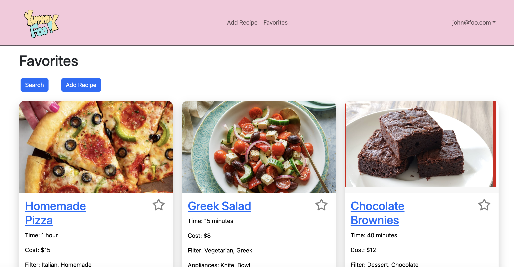
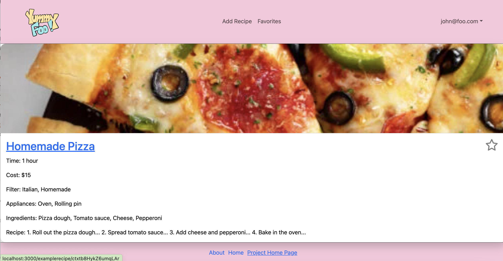

This project revolved around creating a hub for college students specifically to find and share affordable and accessible meals through recipes! Named after a commonly used phrased in computer science, “foo”, as a play on the phrase “Yummy Food”, our website is kept fun and bright not only by the name but by the interface itself.
College students are often on a tight budget with limited resources. Our aim with this website was to not only create a platform where users could find, favorite, and add their own special recipes, but also have it targeted towards the right demographic. It can be easy for students caught up in work, school, and extracurriculars to push their meals to an afterthought. But for this project we strived ot make finding recipes and meals enjoyable and easy enough where it doesn’t become something that stresses students out even more.
In this project roles were divided pretty evenly. As one of the members least familiar with JavaScript, I was focused mostly on designing layouts. I built the home page, designed the logo, and the individual recipe pages that were built using a component made by another teammate. I also assisted in routing the pages using individual recipe ids. We had members in our group who naturally assumed leadership positions so it was my job to just fill in the areas where they needed help. Smaller issues like cleaning up the layout, fixing smaller errors, testing my pages, and adding to the database were also assigned to me.

I learned a lot about learning on my own for this project. Although much of the fundamentals for designing this application were taught in class, the actual implementation was something new and quite confusing to me. While I was able to do my parts of the project, I found that I had a lot to learn from my more experienced teammates. I often would ask for explanations on how they did things like building a working “favoriting” system for the recipes and creating a functioning search page. It was a lot of new information but also made me realize I should be doing more to learn and keep up with my classmates.
Overall I found this project to be my biggest and complex yet and also one I am extremely proud of. I think the next time I attempt another project like this I want to try to do more of the backend work and also be more of a leader within the group. Creating a website application was something I had never done before and enjoyed a lot. I hope to apply what I have learned here and attempt to do more projects like this in the future.
Organization and Source Code: YummyFoo